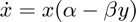
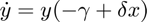
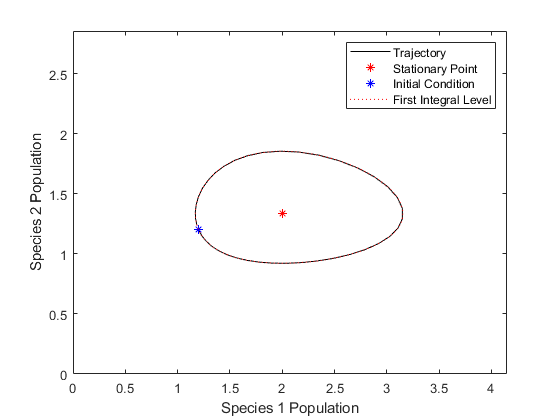
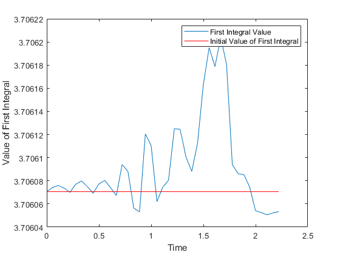
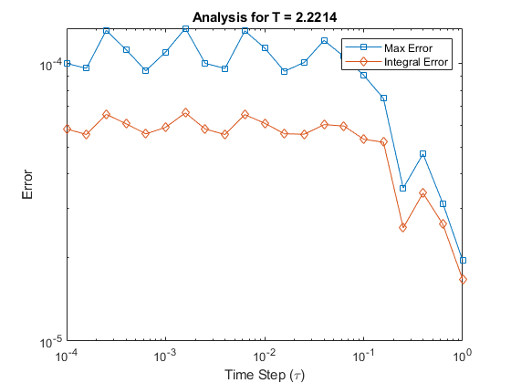

LOTKA-VOLTERRA SYSTEM AND QUALITY OF ode45
This script investigates the behavior and accuracy of the MATLAB ode45 solver when applied to the Lotka-Volterra system of ODEs.


Contents
Initialization
clear; close all; clc;
Define System Parameters
Define the parameters for the Lotka-Volterra system.
alpha = 4;
beta = 3;
gamma = 2;
delta = 1;
% Calculate stationary points of the system.
z_st0 = [0; 0];
z_st1 = [gamma/delta; alpha/beta];
Define First Integral
The first integral is an invariant of the Lotka-Volterra system.
V = @(x, y) delta*x + beta*y - log(x.^gamma .* y.^alpha);
Set Initial Conditions
Define initial conditions and compute the time span for integration.
z_0 = [1.2, 1.2]; T = 2*pi/sqrt(alpha*gamma); tspan = [0, T]; V_0 = V(z_0(1), z_0(2));
Integrate the System using ode45
[t, z] = ode45(@(t, z) lotka_volterra(t, z, [alpha, beta, gamma, delta]), ...
tspan, z_0);
Plot the Trajectory
figure; plot(z(:, 1), z(:, 2), '-k', 'DisplayName', 'Trajectory'); hold on; plot(z_st1(1), z_st1(2), '*r', 'DisplayName', 'Stationary Point'); plot(z_0(1), z_0(2), '*b', 'DisplayName', 'Initial Condition'); fcontour(V, 'LevelList', V_0, 'LineColor', 'red', 'LineStyle', ':', 'DisplayName', 'First Integral Level'); axis([0, max(z(:, 1)) + 1, 0, max(z(:, 2)) + 1]); xlabel('Species 1 Population'); ylabel('Species 2 Population'); legend; hold off;
Plot the First Integral Value
V_T = V(z(:, 1), z(:, 2)); figure; plot(t, V_T, 'DisplayName', 'First Integral Value'); hold on; line([0 t(end)], [V_0 V_0], 'Color', 'red', 'DisplayName', 'Initial Value of First Integral'); xlabel('Time'); ylabel('Value of First Integral'); legend; hold off;
Analysis with Fixed Time Steps
tau = logspace(-4, 0, 21).'; V_tau_C_error = zeros(size(tau)); V_tau_L2_error = zeros(size(tau)); for k = 1:length(tau) tspan_fixed = 0:tau(k):T; [t_fixed, z_fixed] = ode45(@(t, z) lotka_volterra(t, z, [alpha, beta, gamma, delta]), ... tspan_fixed, z_0); V_tau_C_error(k) = max(abs(V(z_fixed(:, 1), z_fixed(:, 2)) - V_0)); L2_error_subIntFun = (V(z_fixed(:, 1), z_fixed(:, 2)) - V_0).^2; V_tau_L2_error(k) = sqrt(trapz(t_fixed, L2_error_subIntFun)); end
Plot Error for Different Time Steps
figure; loglog(tau, abs(V_tau_C_error), 's-', 'DisplayName', 'Max Error'); hold on; loglog(tau, abs(V_tau_L2_error), 'd-', 'DisplayName', 'Integral Error'); xlabel('Time Step (\tau)'); ylabel('Error'); legend; title(['Analysis for T = ' num2str(T)]); hold off;
Lotka-Volterra Function Definition
function dz = lotka_volterra(~, z, parameters) alpha = parameters(1); beta = parameters(2); gamma = parameters(3); delta = parameters(4); dz = zeros(2, 1); dz(1) = z(1) * (alpha - beta*z(2)); dz(2) = z(2) * (-gamma + delta*z(1)); end